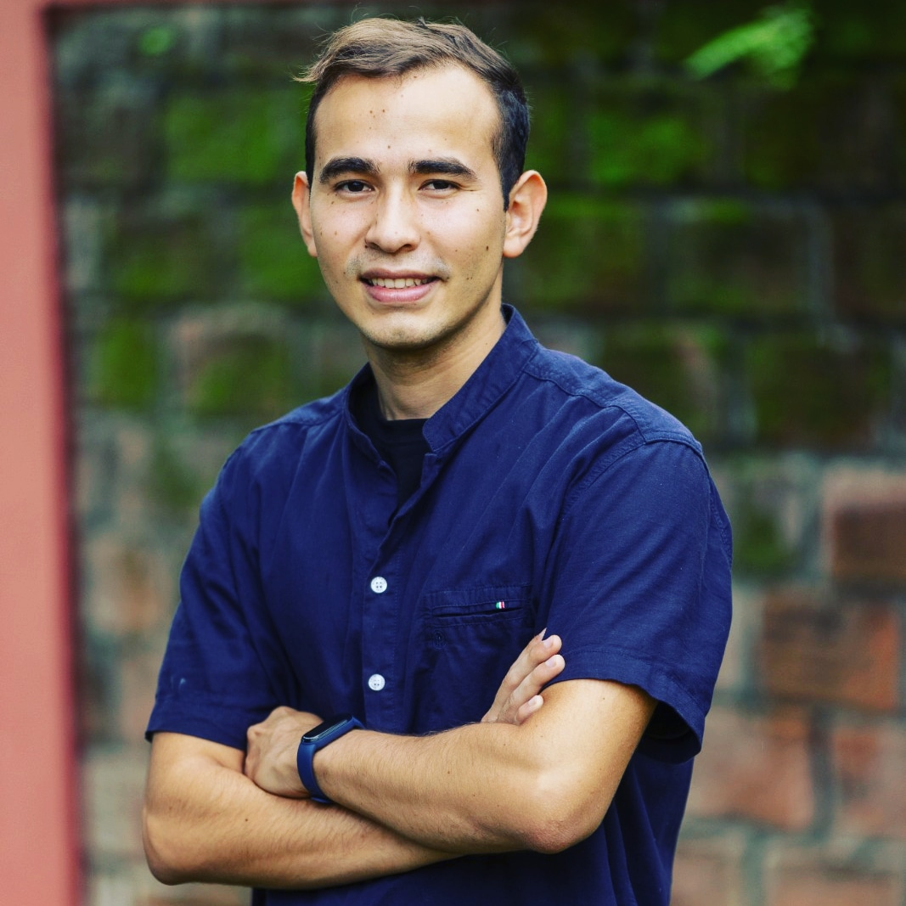

Carlos Eduardo Quijano Gonzalez | WDD 130

Hello! My name is Carlos Quijano and I am from San Salvador, El Salvador. I enjoy to play basketball and watch series, i love coding and i really like to help the people with service

Hello! My name is Carlos Quijano and I am from San Salvador, El Salvador. I enjoy to play basketball and watch series, i love coding and i really like to help the people with service